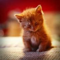

O cérebro de um gato se parece mais com o de um humano do que com o de um cão.
Apesar de não conseguir correr distâncias muita longas, gatos são excepcionalmente rápidos: eles conseguem correr a até 49 km/h.
A maior parte das fêmeas felinas é destra, enquanto os machos são canhotos.
Gatos são extremamente sensíveis a sons e vibrações. Eles conseguem perceber um terremoto com 15 minutos de antecedência.
A idade média de um gato varia dependendo da raça e da saúde do animal. Em geral, a expectativa de vida média de um gato é de 15 a 20 anos.
No entanto, alguns gatos podem viver até 20 anos ou mais, especialmente se receberem cuidados veterinários regulares e tiverem uma alimentação saudável.
Aqui Temos um Gato Adulto e um Gato filhote:
